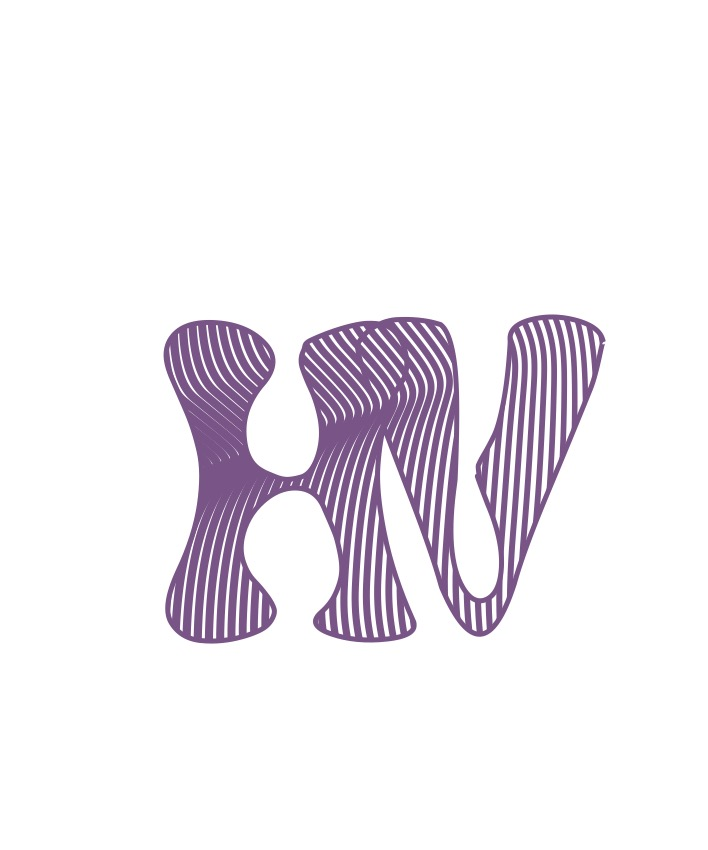
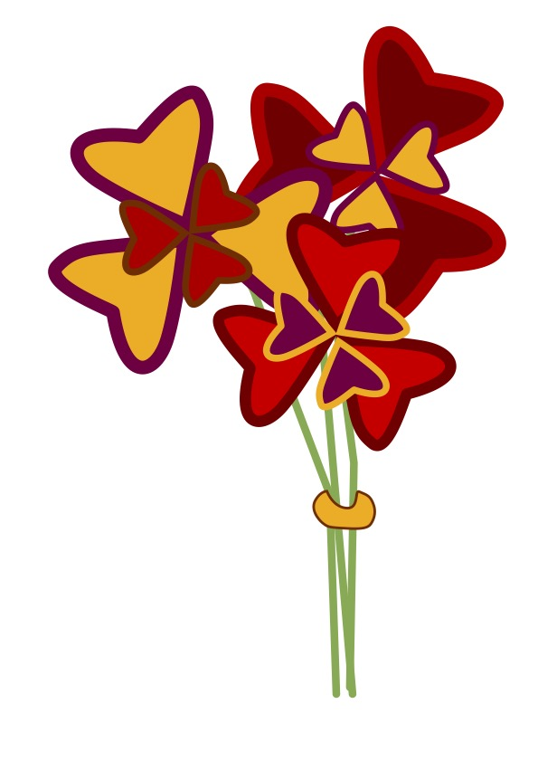
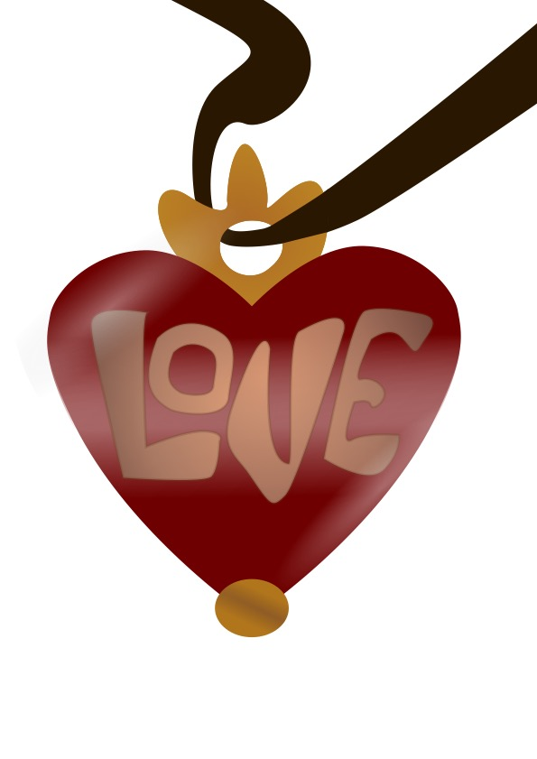
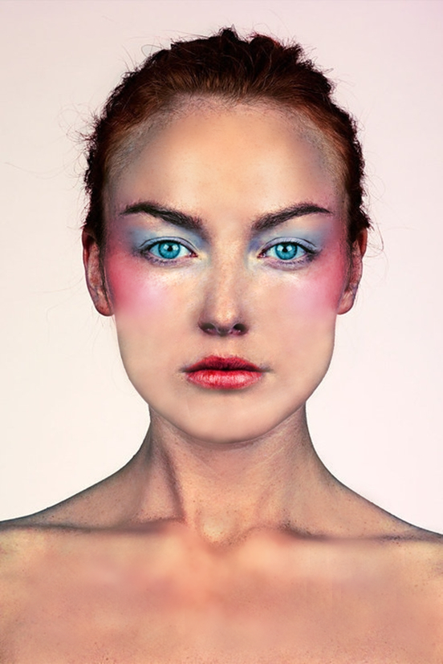
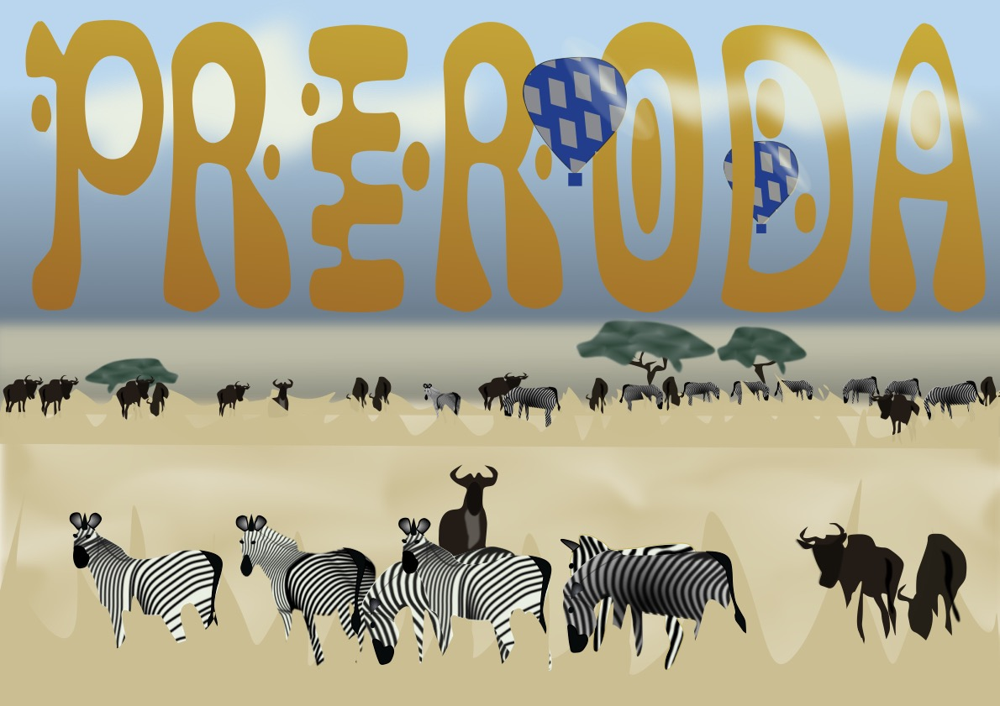

NASLOVNAO MENIVJEŽBEVIDEOKONTAKT
U prvoj vježbi izrađivali smo vlastiti font. Moj font iskorišten je na naslovnoj stranici te u dorađenoj verziji na slici "KOLOKVIJ 1".
U vježbi dva povezivali smo svoj font i osnove crtanja u programu Inkscape.
U trećoj vježbi dodatno smo učili kako crtati u Inkscape-u i morali smo napraviti svoj crtež.
U četvrtoj vježbi također smo učili kako crtati u Inkscape-u.
U petoj vježbi upoznali smo se s programom GIMP. Učili smo kako urediti, retuširati i općenito popraviti nedostatke na fotografiji.
Zadatak u prvom kolokviju bio je nacrtati u Inkscape-u crtež prema zadanom primjeru, gdje smo trebali iskoristiti sve što smo naučili na vježbama te uklopiti naš font.
Prvi zadatak nakon kolokvija bio je u GIMP-u. Učili smo raditi fotomontažu te smo trebali prema primjeru iz videa napraviti svoju sa nekim od zadanih slika.

Zadatak u drugom kolokviju bio je napraviti fotomontažu i napraviti da slika izgleda kao jedna cjelina.

U ovoj vježbi morali smo izraditi vlastiti kinemagraf.

U ovoj vježbi morali smo izraditi vlastiti video. Moj video nalazi se na stranici "O MENI".
@2026 Helena Vurušić. Sva prava pridržana
Na vrh